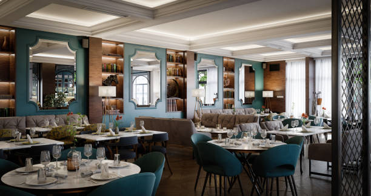

Information About Dining
 Taniti has two supermarkets, two smaller grocery stores, and one convenience store that is open 24
hours a day
Taniti has two supermarkets, two smaller grocery stores, and one convenience store that is open 24
hours a day
Taniti currently has ten restaurants: five serve mostly local fish and rice, three serve American-style
meals, and two serve Pan-Asian cuisine
